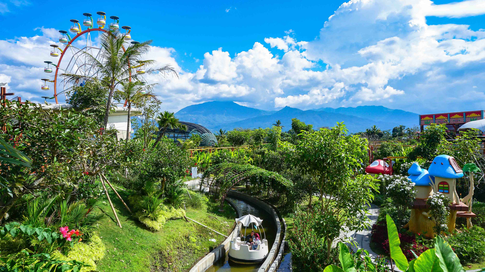
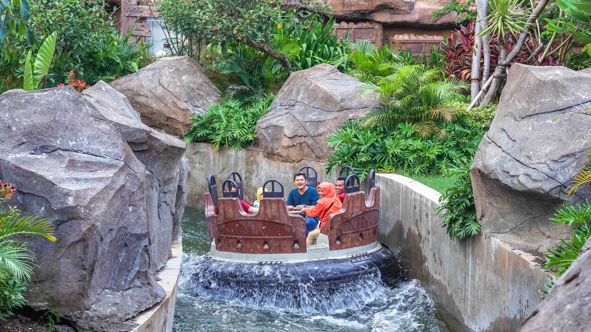

SALOKA hadir sebagai salah satu destinasi wisata Pesona Indonesia yang berbentuk taman rekreasi tematik keluarga di Jawa Tengah yang mengusung konsep kearifan lokal. Berlokasi di persimpangan antara kota Semarang, Salatiga, Surakarta dan Daerah Istimewa Yogyakarta. Berdiri di atas lahan seluas 12 Hektare, memiliki 25 wahana yang dibangun dengan peralatan modern oleh tenaga ahli berpengalaman dan berlisensi internasional. Nama SALOKA terinspirasi dari legenda Rawa Pening, suatu Kawasan yang dekat dengan wilayah SALOKA Theme Park berada. Diceritakan pada zaman dahulu hiduplah sepasang suami-istri bernama Ki Hajar Salokantara dan Nyi Endang Sawitri. Mereka mempunyai seorang anak bernama Baru Klinthing yang berwujud naga dan bisa berbicara seperti layaknya manusia. Baru Klinthing dikenal suka menolong. Berangkat dari cerita tersebut, SALOKA berharap mampu menyajikan keceriaan tiada habisnya dengan maskot berbentuk naga yang bernama “LOKA”.
Tempat wisata modern ini berada di Kecamatan Tuntang, Kabupaten Semarang. Lokasinya berada di sekitar Rawa Pening, danau yang terkenal dengan legenda Baru Klinting. Lokasinya yang berada di tepi jalur utama Solo-Semarang membuat tempat ini sangat mudah ditemukan. Apalagi, wisatawan bisa memanfaatkan aplikasi peta di ponsel untuk mencarinya. Bagi wisatawan yang ingin berkunjung mengendarai mobil pribadi, baik dari Semarang maupun Solo, kamu akan lebih mudah mengaksesnya melalui jalan tol. Kemudian, kamu bisa keluar melalui pintu Tol Bawen. Setelah keluar, kamu bisa berbelok ke kiri dan melewati jalur utama Semarang-Solo. Nantinya Saloka Theme Park berada di kanan jalan.
Dikutip dari akun instagram @salokapark, pengelola menerapkan sistem tiket terusan untuk masuk ke tempat wisata ini. Artinya, dengan sekali membeli tiket kamu bisa mencoba semua wahana yang ada sesuai usia. Sayangnya, mereka hanya menerapkan tiket terusan. Bagi orang tua yang hanya ingin mengantar anaknya dan tidak ikut menjajal wahana juga harus membayar tiket dengan harga yang sama. Namun, khusus pengunjung berusia 55 tahun ke atas tetap memperoleh potongan harga.